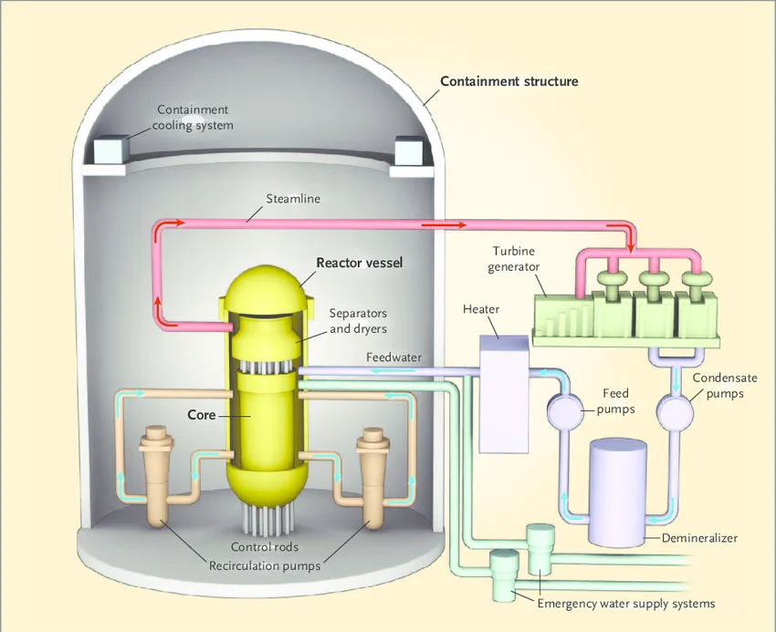
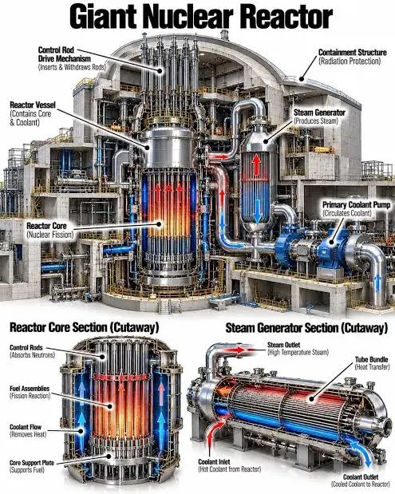

geiger235
RADIATION
It’s a beautiful creation of God. Given the right use, it can produce wonderful results, yet due to pollution and violence, it’s got a bad wrap. Let’s clear up some misconceptions.

Power plant diagram

Power plant blueprint
WHAT IS IT?
Radiation is:
“Radiation is energy that
moves from one place to
another in a form that can
be described as waves
or particles.”
- International Atomic Energy Agency (2023).
Radiation has been in invisible force we interact with everyday with in the sun, our consumer products, water, and medicine.
USEFUL?
Radiation can be used in:
Health:
Bio-med procedures use radiation to diagnose cancer and image body parts for physical and genetic damage.
Energy:
It’s not just uranium power plants, but also the solar radiation that fuels our solar panels for green sustainable futures.
Protecting/Managing Nature:
Radiation is used to purify wastewater and mutate crops to be more efficient in a worsening climate.
Industrialism:
Nuclear tech uses radiation to date historical relics, strengthen chemical products, and improve parts for manufacturing.
Power plant's clean energy
X-ray scanning
BOTTOM LINE...
Ionising radiations are what we typically think of. They are the
powerful portions of the electromagnetic spectrum or subatomic
particles that can move with high energy to jostle
around atomic structures.
Think of it in medicine! X-rays look at your bones
Gamma rays can target malicious dna and cancer cells in radiotherapy sessions.
Beta rays and electrons help map the body’s metabolic structure by showing up
on monitors, making the invisible visible!√]]
SO...
Like radiation waves, the good is often unseen, and the bad is felt. Look around and see the wonders!
Fallout: A Post Nuclear Role Playing Game